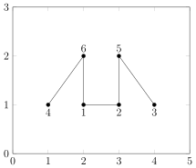

8.7. Answers to Tutorial Exercises Chapter 8#
- \[\begin{split}\begin{aligned} A = \begin{pmatrix} 1 & 1 & 0 & 0 & 1 & 0\\ 1 & 1 & 1 & 0 & 0 & 1\\ 0 & 1 & 1 & 0 & 0 & 0\\ 0 & 0 & 0 & 1 & 1 & 0\\ 1 & 0 & 0 & 1 & 1 & 1\\ 0 & 1 & 0 & 0 & 1 & 1\\ \end{pmatrix} \end{aligned}\end{split}\]
% Exercise 7-qn1(a) A=[ 1 1 0 0 1 0 1 1 1 0 0 1 0 1 1 0 0 0 0 0 0 1 1 0 1 0 0 1 1 1 0 1 0 0 1 1]; xy=[1 1;3 1;4 1; 1 2;2 2;4 2]; gplot(A,xy,'k-*'); axis([0 5 0 3]); text(1,0.9,'1'); text(3,0.9,'2'); text(4,0.9,'3'); text(1,2.1,'4'); text(2,2.1,'5'); text(4,2.1,'6'); %End
\[\begin{split}\begin{aligned} A = \begin{pmatrix} 1 & 1 & 0 & 0 & 0 & 1\\ 1 & 1 & 0 & 0 & 1 & 0\\ 0 & 0 & 1 & 0 & 1 & 0\\ 0 & 0 & 0 & 1 & 0 & 1\\ 0 & 1 & 1 & 0 & 1 & 0\\ 1 & 0 & 0 & 1 & 0 & 1\\ \end{pmatrix} \end{aligned}\end{split}\]% Exercise 7-qn1(b) A=[ 1 1 0 0 0 1 1 1 0 0 1 0 0 0 1 0 1 0 0 0 0 1 0 1 0 1 1 0 1 0 1 0 0 1 0 1]; xy=[2 1;3 1;4 1; 1 1;3 2;2 2]; gplot(A,xy,'k-*'); axis([0 5 0 3]); text(2,0.9,'1'); text(3,0.9,'2'); text(4,0.9,'3'); text(1,0.9,'4'); text(3,2.1,'5'); text(2,2.1,'6'); %End

Consider the following adjacency graph:

First we write down the associated adjacency matrix - it is most efficient to create a script file in MATLAB and type all of your matrices within this file for multiple use.
A=[ 1 1 1 1 0 1 0 1 0 1 1 1 1 0 0 0 0 0 0 0 1 1 1 0 0 0 0 0 0 0 1 0 0 1 0 1 0 1 0 0 0 0 0 0 1 1 0 1 1 1 1 0 0 1 1 1 1 1 0 0 0 0 0 0 0 1 1 0 0 0 1 0 0 1 1 1 0 1 1 1 0 0 0 0 1 0 0 1 1 1 1 0 0 0 1 0 0 1 1 1]
In MATLAB use the command spy(A) to find the pattern and the number of nonzero elements: i.e.
>> spy(A)You can find the hald bandwitch of \(A\) using the following commands:
>> [i,j]=find(A); >> bw=max(i-j) bw = 9Therefore the full bandwidth is \(= 9 + 9 + 1 = 19\)
Next we apply the Cuthill-McKee (CM) and reverse Cuthill-McKee (RCM) ordering algorithms to reduce the bandwidth.
we need to construct the following table
Original nodes No. of connections Results / Heads Queue Result by CM Result by RCM New nodes ---------------- -------------------- ----------------- ------------ -------------- --------------- ----------- 1 6 7 6 2 2 6 4, 5, 8, 1 3 2 4 -- 4 3 5 9, 10 5 4 8 -- 6 5 1 2, 3 7 1 9 -- 8 6 10 -- 9 3 2 -- 10 4 3 --
Step 1 - list all the nodes and the number of their connections (or degree) – check this with the adjacency matrix as well.
Step 2 - choose the node with smallest number of connections – here is node 7 – write it down under the Results/Heads column. Since node 7 is only connected to node 6 we write down 6 Queue column. Bring down 6 to the results column,
Step 3 - next, in the Queue column write down the list of nodes which are connected to 6 (in the ascending order of their degree or number of connections). Bring 4 down and repeat Stage 3. Avoid writing the numbers which are already listed in the Queue column and the starting node 7 – since 6, 1, and 8 are already in the Queue we put a – for node 4 in the Queue column.
Step 4 - we bring the next number down in the queue – that is 5, and repeat stage 3. We only list 9 and 10, since 6 and 8 are already listed in the queue.
Repeat Step 4 – all the connections to node 8 already in the list, so we put a – for node 8 in the Queue column.
We bring 1 down which is connected to two new nodes 2 and 3, we write down 2, 3 in the Queue column.
Next, we bring 9 and follow the above procedure until all 10 nodes are listed in the results/Head column.
Original nodes No. of connections Results / Heads Queue Result by CM Result by RCM New nodes ---------------- -------------------- ----------------- ------------ -------------- --------------- ----------- 1 6 7 6 7 3 1 2 2 6 4, 5, 8, 1 6 2 2 3 2 4 -- 4 10 3 4 3 5 9, 10 5 9 4 5 4 8 -- 8 1 5 6 5 1 2, 3 1 8 6 7 1 9 -- 9 5 7 8 6 10 -- 10 4 8 9 3 2 -- 2 6 9 10 4 3 -- 3 7 10
Complete results column for CM (the same as the column Results / Heads) and then reverse the CM column for RCM method, and enter the column header ‘New nodes’.
We now copy the original adjacency graph and go along the RCM column, and say that, the original node 3 becomes node 1, original node 2 remains node 2, original node 10 becomes 3, and so on.
Repeat this for CM method.


Now use MATLAB to construct the adjacency matrix B and C associated with the reordered RCM adjacency plot:
B=[ 1 1 0 0 0 0 0 0 0 0 1 1 1 1 1 1 0 0 0 0 0 1 1 0 1 1 0 0 0 0 0 1 0 1 1 0 1 1 0 0 0 1 1 1 1 1 1 1 0 0 0 1 1 0 1 1 0 1 1 1 0 0 0 1 1 0 1 1 0 0 0 0 0 1 1 1 1 1 0 0 0 0 0 0 0 1 0 0 1 1 0 0 0 0 0 1 0 0 1 1];
We can now find the bandwidth for the reordered matrix:
>> [i,j]=find(B); >> bw=max(i-j) bw = 4
Hence, the full bandwidth for the reordered matrix by CM method is \(= 4 + 4 + 1 = 9\).
C=[ 1 1 0 0 1 0 0 0 0 0 1 1 0 0 1 0 0 0 0 0 0 0 1 1 1 1 1 0 0 0 0 0 1 1 0 1 1 0 0 0 1 1 1 0 1 1 0 1 1 0 0 0 1 1 1 1 1 1 1 0 0 0 1 1 0 1 1 0 1 0 0 0 0 0 1 1 0 1 1 0 0 0 0 0 1 1 1 1 1 1 0 0 0 0 0 0 0 0 1 1]; >> [i,j]=find(B); >> bw=max(i-j) bw = 4
Hence, the full bandwidth for the reordered matrix by CM method is \(= 4 + 4 + 1 = 9\).
For this example matrix, both CM and RCM work equally well in reducing the bandwidth of the original matrix from 19 to 9.
Next we use the MATLAB command
symrcm(A)to test our RCM reordering result.>> p=symrcm(A); >> spy(A(p,p))
Next we can find the corresponding bandwidth:
>> [i,j]=find(A(p,p)); >> bw=max(i-j) bw = 4
Hence, the
symrcmcommand also results in a full bandwidth of \(= 4 + 4 + 1 = 9\).Reading form the plot of
symrcmadjacency matrix, we can also write down the associated adjacency matrix and plot:A(p,p)=[ 1 0 0 0 1 0 0 0 0 0 0 1 1 1 1 1 0 0 0 0 0 1 1 1 0 1 0 0 0 0 0 1 1 1 1 1 1 1 0 0 1 1 0 1 1 0 1 1 0 0 0 1 1 1 0 1 0 1 0 0 0 0 0 1 1 1 1 1 1 1 0 0 0 0 0 0 0 1 1 1 0 0 0 0 0 0 0 1 1 1]
Column Count reordering:
::: tabular r\|\>CCCCCCCCCC vertex & 1 & 2 & 3 & 4 & 5 & 6 & 7 & 8 & 9 & 10\ degree & 6 & 2 & 2 & 3 & 4 & 5 & 1 & 6 & 3 & 4\
r\|\>CCCCCCCCCC vertex & 1 & 2 & 3 & 4 & 5 & 6 & 7 & 8 & 9 & 10\ original & 7& 2& 3& 4& 9& 5&10& 6& 1& 8\
::: center +:------------------------------+:------------------------------+ | {width="0.9\\linewidth"} | tikz){width="0.9\\linewidth"} | +-------------------------------+-------------------------------+ | | | | | | | $\s | | | criptsize D = \begin{pmatrix} | | | 1 & 0 & 0 | | | & 0 & 0 & 0 & 0 & 1 & 0 & 0\\ | | | 0 & 1 & 1 | | | & 0 & 0 & 0 & 0 & 0 & 1 & 0\\ | | | 0 & 1 & 1 | | | & 0 & 0 & 0 & 0 & 0 & 1 & 0\\ | | | 0 & 0 & 0 | | | & 1 & 0 & 0 & 0 & 1 & 1 & 1\\ | | | 0 & 0 & 0 | | | & 0 & 1 & 1 & 1 & 0 & 0 & 1\\ | | | 0 & 0 & 0 | | | & 0 & 1 & 1 & 1 & 1 & 0 & 1\\ | | | 0 & 0 & 0 | | | & 0 & 1 & 1 & 1 & 0 & 1 & 1\\ | | | 1 & 0 & 0 | | | & 1 & 0 & 1 & 0 & 1 & 1 & 1\\ | | | 0 & 1 & 1 | | | & 1 & 0 & 0 & 1 & 1 & 1 & 1\\ | | | 0 & 0 & | | | 0 & 1 & 1 & 1 & 1 & 1 & 1 & 1 | | | \end{pmatrix}$ | | +-------------------------------+-------------------------------+ | | | | | | | Note that D (ordered Matrix | | | $A$ by Column Count | | | algorithm) is identical to | | | Matrix A ordered by using the | | | MATLAB command `colperm` i.e. | | | | | | >> q=colperm(A); | | | >> spy(A(q,q)) | | +-------------------------------+-------------------------------+Minimum Degree reordering
---------- ---- ----------------------------- --- --- --- --- --- --- --- --- ---- New vertex and number of degree ordering 1 2 3 4 5 6 7 8 9 10 6 2 2 3 4 5 1 6 3 4 1 7 6 2 2 3 4 4 X 6 3 4 2 2 5 X 1 3 4 4 X 6 3 4 3 3 4 X X 3 4 4 X 5 3 4 4 4 3 X X X 4 3 X 5 3 4 5 1 X X X X 4 2 X 4 3 3 6 6 X X X X 3 X X 3 3 3 7 8 X X X X 2 X X X 2 2 8 5 X X X X X X X X 1 1 9 9 X X X X X X X X X 1 10 10 X X X X X X X X X X ---------- ---- ----------------------------- --- --- --- --- --- --- --- --- ----+:------------------------------+:------------------------------+ | | | | | | | $\s | {width="0.9\\linewidth"} | | 1 & 0 & 0 | | | & 0 & 0 & 1 & 0 & 0 & 0 & 0\\ | | | 0 & 1 & 1 | | | & 0 & 1 & 0 & 0 & 0 & 0 & 0\\ | | | 0 & 1 & 1 | | | & 0 & 1 & 0 & 0 & 0 & 0 & 0\\ | | | 0 & 0 & 0 | | | & 1 & 1 & 1 & 1 & 0 & 0 & 0\\ | | | 0 & 1 & 1 | | | & 1 & 1 & 1 & 1 & 0 & 0 & 1\\ | | | 1 & 0 & 0 | | | & 1 & 1 & 1 & 1 & 1 & 0 & 0\\ | | | 0 & 0 & 0 | | | & 1 & 1 & 1 & 1 & 1 & 1 & 1\\ | | | 0 & 0 & 0 | | | & 0 & 0 & 0 & 1 & 1 & 1 & 1\\ | | | 0 & 0 & | | | 0 & 0 & 1 & 0 & 1 & 1 & 1 & 1 | | | \end{pmatrix}$ | | +-------------------------------+-------------------------------+ | | | +-------------------------------+-------------------------------+Comment – for this matrix, the MD algorithm seems to produce a reordered matrix very similar to the
sysamdfunction within MATLAB, hence the algorithm works well.Next we perform LU factorisation and check the number of nonzeros generated in the decomposition process.
See Figure 7.Q2, below. Compare the upper triangular matrix \(U\) in each case with the corresponding full matrices, i.e. original matrix \(A\), RCM (\(C\)), Column Count (\(D\)) and Minimum Degree (\(M\)), and write down the number of nonzeros generated for each case. The answer will be checked in the tutorial session.
------------------------------- ------------------------------- ------------------------------- -------------------------------Figure 7.Q2 Comparison of ordering schemes (using the algorithms shown in Chapter 7), and their \(LU\) factorisation showing fill-ins reduction.
\[\begin{split}\begin{aligned} \scriptsize A = \begin{pmatrix} 1 & 0 & 1 & 0 & 0 & 0 & 0 & 1 & 1\\ 0 & 1 & 1 & 0 & 0 & 0 & 1 & 1 & 0\\ 1 & 1 & 1 & 0 & 0 & 0 & 0 & 0 & 0\\ 0 & 0 & 0 & 1 & 0 & 0 & 0 & 1 & 1\\ 0 & 0 & 0 & 0 & 1 & 0 & 1 & 1 & 0\\ 0 & 0 & 0 & 0 & 0 & 1 & 1 & 0 & 0\\ 0 & 1 & 0 & 0 & 1 & 1 & 1 & 0 & 0\\ 1 & 1 & 0 & 1 & 1 & 0 & 0 & 1 & 0\\ 1 & 0 & 0 & 1 & 0 & 0 & 0 & 0 & 1 \end{pmatrix} \end{aligned}\end{split}\]CM and RCM reordering:
---------- -------- ----------- ------- -------- ----------------- ------- Original No. of Results / Queue Result Result New nodes conn Heads by CM by RCM nodes 1 3 6 7 6 9 $\rightarrow$ 1 2 3 7 5,2 7 1 $\rightarrow$ 2 3 2 5 8 5 4 $\rightarrow$ 3 4 2 2 3 2 3 $\rightarrow$ 4 5 2 8 4,1 8 8 $\rightarrow$ 5 6 1 3 -- 3 2 $\rightarrow$ 6 7 3 4 9 4 5 $\rightarrow$ 7 8 4 1 -- 1 7 $\rightarrow$ 8 9 2 9 -- 9 6 $\rightarrow$ 9 ---------- -------- ----------- ------- -------- ----------------- -------
\[\begin{split}\begin{aligned} \scriptsize B = \begin{pmatrix} 1 & 1 & 0 & 0 & 0 & 0 & 0 & 0 & 0\\ 1 & 1 & 1 & 1 & 0 & 0 & 0 & 0 & 0\\ 0 & 1 & 1 & 0 & 1 & 0 & 0 & 0 & 0\\ 0 & 1 & 0 & 1 & 1 & 1 & 0 & 0 & 0\\ 0 & 0 & 1 & 1 & 1 & 0 & 1 & 1 & 0\\ 0 & 0 & 0 & 1 & 0 & 1 & 0 & 1 & 0\\ 0 & 0 & 0 & 0 & 1 & 0 & 1 & 0 & 1\\ 0 & 0 & 0 & 0 & 1 & 1 & 0 & 1 & 1\\ 0 & 0 & 0 & 0 & 0 & 0 & 1 & 1 & 1 \end{pmatrix} \end{aligned}\end{split}\]\[\begin{split}\begin{aligned} \scriptsize C = \begin{pmatrix} 1 & 1 & 1 & 0 & 0 & 0 & 0 & 0 & 0\\ 1 & 1 & 0 & 1 & 1 & 0 & 0 & 0 & 0\\ 1 & 0 & 1 & 0 & 1 & 0 & 0 & 0 & 0\\ 0 & 1 & 0 & 1 & 0 & 1 & 0 & 0 & 0\\ 0 & 1 & 1 & 0 & 1 & 1 & 1 & 0 & 0\\ 0 & 0 & 0 & 1 & 1 & 1 & 0 & 1 & 0\\ 0 & 0 & 0 & 0 & 1 & 0 & 1 & 1 & 0\\ 0 & 0 & 0 & 0 & 0 & 1 & 1 & 1 & 1\\ 0 & 0 & 0 & 0 & 0 & 0 & 0 & 1 & 1 \end{pmatrix} \end{aligned}\end{split}\]>> [i,j]=find(A); >> bw=max(i-j), bw=8,
full bandwidth\(= 8 \times 2 + 1 = 17\)
>> [i,j]=find(C); >> bw=max(i-j), bw=3,
full bandwidth\(= 3 \times 2 + 1 = 7\)
>> [i,j]=find(B); >> bw=max(i-j), bw=3,
full bandwidth\(= 3 \times 2 + 1 = 7\)
>> p=symrcm(A); >> spy(A(p,p)) >> [i,j]=find(A(p,p)); >> bw=max(i-j), bw=3,
full bandwidth\(= 3 \times 2 + 1 = 7\)
------------------------------- ------------------------------- ------------------------------- -------------------------------Column Count reordering:
::: tabular r\|\>CCCCCCCCC vertex & 1 & 2 & 3 & 4 & 5 & 6 & 7 & 8 & 9\ degree & 3 & 3 & 2 & 2 & 2 & 1 & 3 & 4 & 2\
r\|\>CCCCCCCCC vertex & 1 & 2 & 3 & 4 & 5 & 6 & 7 & 8 & 9\ Original & 6& 3& 4& 5& 9& 1& 2& 7& 8\
$$\begin{aligned} D = \begin{pmatrix} 1 & 0 & 0 & 0 & 0 & 0 & 0 & 1 & 0\\ 0 & 1 & 0 & 0 & 0 & 1 & 1 & 0 & 0\\ 0 & 0 & 1 & 0 & 1 & 0 & 0 & 0 & 1\\ 0 & 0 & 0 & 1 & 0 & 0 & 0 & 1 & 1\\ 0 & 0 & 1 & 0 & 1 & 1 & 0 & 0 & 0\\ 0 & 1 & 0 & 0 & 1 & 1 & 0 & 0 & 1\\ 0 & 1 & 0 & 0 & 0 & 0 & 1 & 1 & 1\\ 1 & 0 & 0 & 1 & 0 & 0 & 1 & 1 & 0\\ 0 & 0 & 1 & 1 & 0 & 1 & 1 & 0 & 1 \end{pmatrix} \end{aligned}$$ >> spy(D),title('Matrix D CC') >> q=colperm(A); >> spy(A(q,q)),title('Matrix A(q,q) colperm') **Comment** -- For this matrix, the MD algorithm works well and produces a reordered matrix exactly the same as the `colperm` function in MATLAB. **Minimum Degree reordering** ::: center ---------- --- ----------------------------- --- --- --- --- --- --- --- --- New vertex and number of degree ordering 1 2 3 4 5 6 7 8 9 3 3 2 2 2 1 3 4 2 1 6 3 3 2 2 2 X 2 4 2 2 3 2 2 X 2 2 X 2 4 2 3 1 X 2 X 2 2 X 2 3 1 4 9 X 2 X 1 2 X 2 3 X 5 4 X 2 X X 2 X 2 2 X 6 7 X 2 X X 2 X X 2 X 7 2 X X X X 1 X X 1 X 8 5 X X X X X X X 1 X 9 8 X X X X X X X X X ---------- --- ----------------------------- --- --- --- --- --- --- --- ---Comment – the MD algorithm does not seem to work as well as the
sysamdfunction MATLAB.Storage consideration
The following MATLAB commands provide information on sparse and full matrices storage organisation.
>> S=sparse(+(rand(1000,1000) < 2/3)); %i.e. a sparse matrix with a density of about two-thirds >> F=full(S); >> whos F 1000x1000 8000000 double S 1000x1000 7997528 double sparse >> S=sparse(+(rand(1000,1000) < 1/3)); %i.e. a sparse matrix with a density of about one-thirds >> F=full(S); >> whos F 1000x1000 8000000 double S 1000x1000 3994592 double sparse
Note that the saving in storage in inversely proportional to the sparsity ratio or percentage (i.e. percentage of nonzero entries of a matrix), i.e. the higher the sparsity percentage, the higher the sparsity percentage, the higher the saving in storage will be.
A=[ 1 0 1 0 0 0 0 1 1 0 1 1 0 0 0 1 1 0 1 1 1 0 0 0 0 0 0 0 0 0 1 0 0 0 1 1 0 0 0 0 1 0 1 1 0 0 0 0 0 0 1 1 0 0 0 1 0 0 1 1 1 0 0 1 1 0 1 1 0 0 1 0 1 0 0 1 0 0 0 0 1];
>> S=sparse(A); >> F=full(A); >> whos Name Size Bytes Class Attributes A 9x9 648 double S 9x9 576 double sparse F 9x9 648 doubleTherefore, even with a 9\(\times\)
<!-- -->{=html}9 matrix there is a reduction in storage when using sparse matrices storage.Repeat for matrices \(D\) (column count) and \(M\) (minimum degree) and comment.